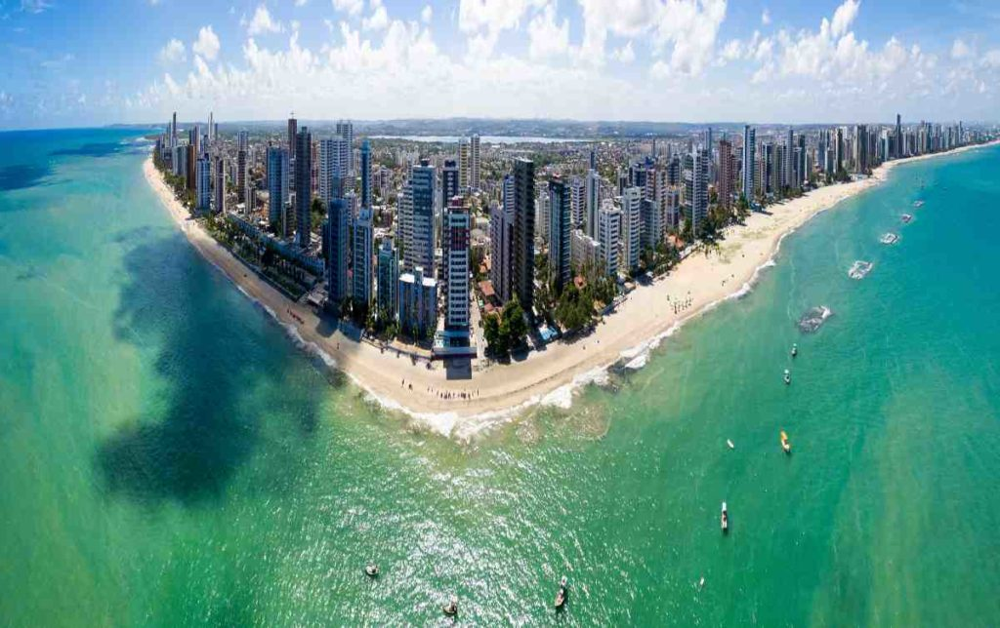
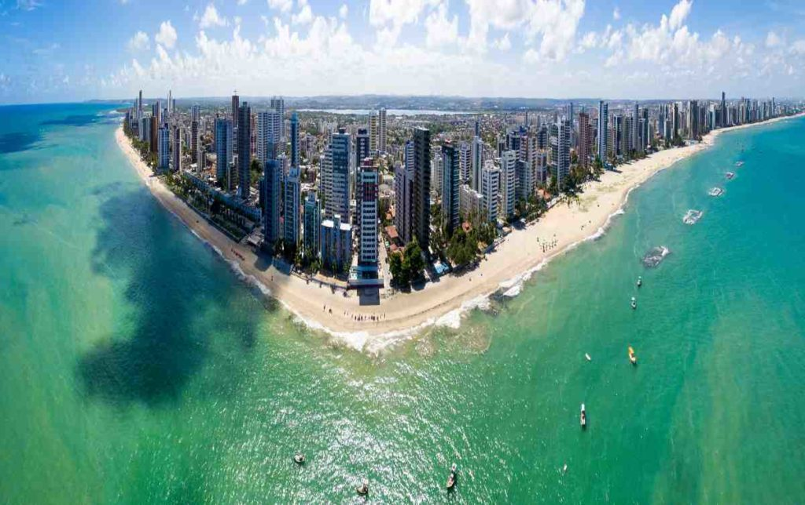
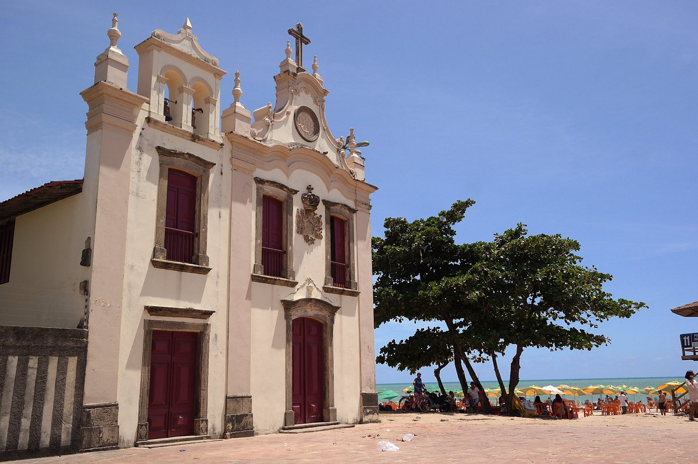
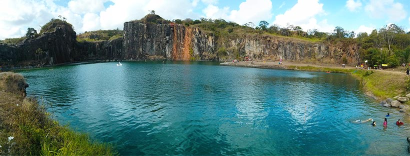
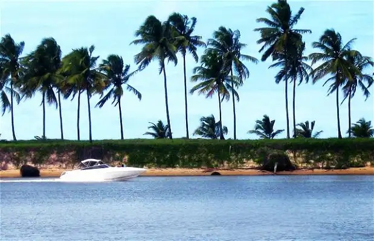
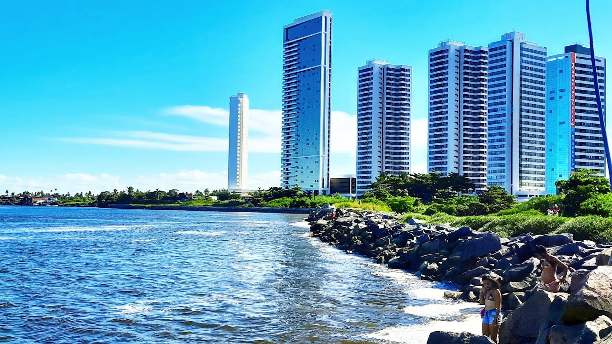
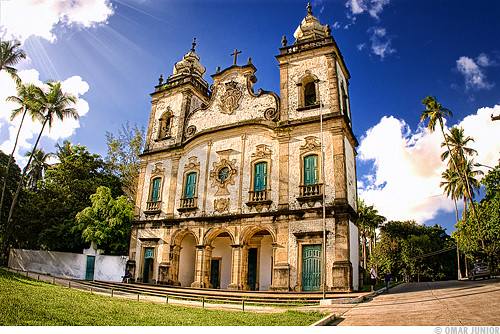
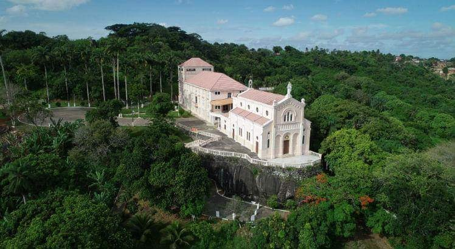
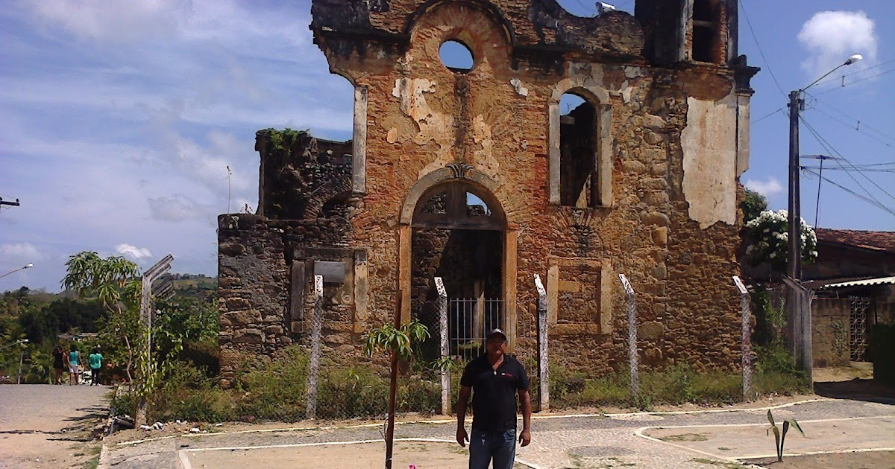
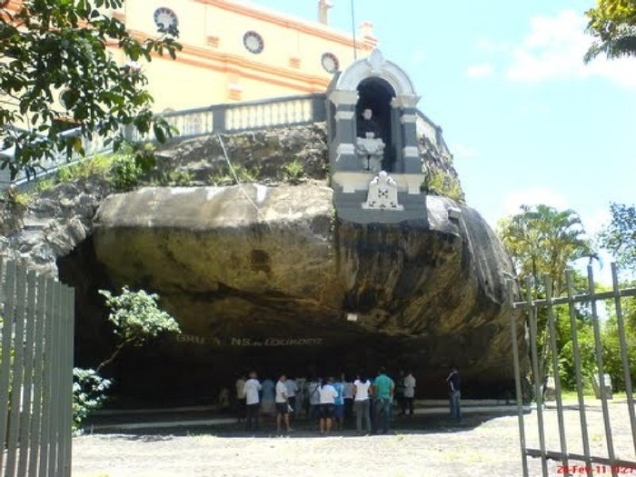

1 – Praias de Piedade e de Candeias
O litoral jaboatonense é cercado por praias tranquilas, de areia branca e águas cristalinas. Elas são alguns dos pontos turísticos mais apreciados de Jaboatão.
O litoral jaboatonense é cercado por praias tranquilas, de areia branca e águas cristalinas. Elas são alguns dos pontos turísticos mais apreciados de Jaboatão.
A Igreja Nossa Senhora da Piedade, construída em 1683, passou por várias reformas ao longo da sua história. Seu estilo arquitetônico é maneirista, apresentando uma estrutura de alvenaria de pedra e um convento anexo que foi erguido no século XVIII. A igreja possui o status de tombamento pelo IPHAN.
Situada na zona rural de Jaboatão dos Guararapes, a Lagoa Azul é um espetáculo de beleza natural. O cenário é composto por paredões rochosos, águas e árvores. Os amantes da natureza podem apreciar a vista, nadar ou caminhar ao redor da lagoa. Para os mais aventureiros, há um ponto fixo para prática de rapel, disponível aos sábados e domingos a partir das 9h.
Um local pitoresco e acolhedor, a Ilha do Amor é perfeita para relaxar e desfrutar de momentos de tranquilidade e lazer. Enquanto as crianças se divertem, os adultos podem descansar. Aqueles que gostam de mergulhar ou tomar sol na areia vão adorar a Ilha do Amor, uma das praias mais belas e serenas de Jaboatão dos Guararapes.
Estabelecido em 1973, o Parque Nacional dos Guararapes abrange mais de 3 km² de área e abriga três dos destinos turísticos mais populares de Jaboatão: o histórico Monte dos Guararapes, a Igreja de Nossa Senhora dos Prazeres e a Festa da Pitomba.
Ademais, no Mirante André Vidal de Negreiros, os visitantes podem desfrutar de uma vista panorâmica deslumbrante das três cidades vizinhas: Olinda, Recife e Jaboatão dos Guararapes. No parque, há atrações culturais e de lazer para todos.

Com cerca de 400 m de extensão, essa praia apresenta trechos quebrados e suas areias são finas e douradas, com pequenas áreas de vegetação rasteira. Devido à sua localização na foz do Rio Jaboatão, a praia tem duas faces: uma voltada para o Oceano e outra para a foz do rio.
A igreja atual resulta de três fases distintas de construção, que foram sucessivamente incorporadas às ampliações da capela primitiva, que agora constitui a capela-mor.
A primeira ampliação ocorreu entre 1676 e 1680, com a construção da nave e dois altares laterais. Novas reformas foram iniciadas em 1755.
No altar-mor da igreja estão os restos mortais de André Vidal de Negreiros e João Fernandes Vieira, heróis da Restauração Pernambucana. A igreja foi tombada em 1937.
Construído em 1915 por um padre italiano, o Santuário Basílica de Nossa Senhora Auxiliadora apresenta um estilo romântico com influências bizantinas em sua arquitetura externa. Na fachada, destaca-se a imagem de Nossa Senhora Auxiliadora com 4 metros de altura, feita em gesso. Em 1918, foi inaugurada uma escadaria de 52 degraus que leva à gruta de Nossa Senhora de Lourdes, localizada sob a rocha onde a Basílica foi construída.
Localizadas no Povoado de Muribeca dos Guararapes, município de Jaboatão dos Guararapes, as ruínas da Igreja do Rosário dos Homens Pretos estão na parte mais baixa do povoado, oposta à Igreja Matriz do mesmo local, também dedicada a Nossa Senhora do Rosário. As ruínas são uma característica peculiar da localidade.
Na parte externa do Santuário Basílica de Nossa Senhora Auxiliadora, sob a rocha onde a Basílica foi construída, encontra-se a Gruta de Nossa Senhora de Lourdes. O espaço está preparado para acomodar romeiros.
